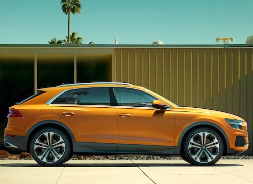
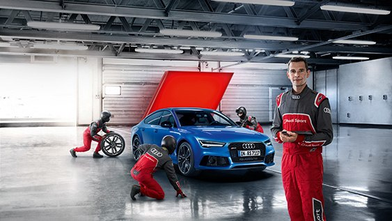

| Новый Audi Q7  |
Audi Центр Минск | Официальный сервис Audi  |
|||
|---|---|---|---|---|---|
| Квалифицированное обслуживание по стандартам Audi: качественно и в срок. Настоящий сервис — это искренняя забота и умение предвосхищать ожидания. В сервисе Audi они сочетаются с гарантиями качества, надежности и высокими стандартами обслуживания автомобилей | Аudi Центр Минск предлагает полный спектр услуг по сервисному обслуживанию всего модельного ряда автомобилей марки Audi, гарантийному и постгарантийному ремонту с использованием оригинальных запасных частей | ||||
| Мы оказываем полный спектр услуг по техническому, гарантийному обслуживанию и ремонту всех автомобилей марки Audi. | |||||
Модельный ряд
|
Текст5 | Список1 | Наши приемущества
|
||